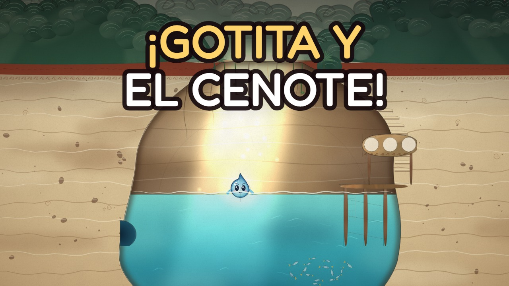
Ciencia · 01
Gotita y el Cenote Mágico
Gotita es una gota de lluvia que cae en la selva de Yucatán, viaja bajo la tierra por la piedra caliza y descubre un lugar mágico: ¡un cenote!
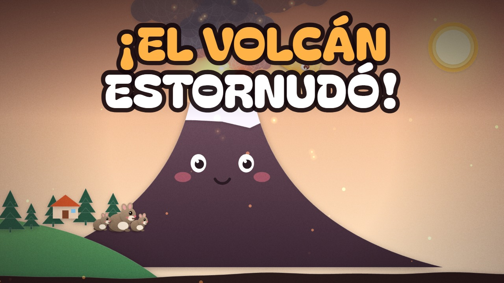
Ciencia · 02
Magmi y el Volcán Dormilón
Magmi es una gotita de magma que vive muy abajo de la tierra. Un día sube por el volcán Don Goyo, sale volando como lava… ¡y se convierte en piedra! Con los años, esa piedra se vuelve tierra donde crece el maíz.
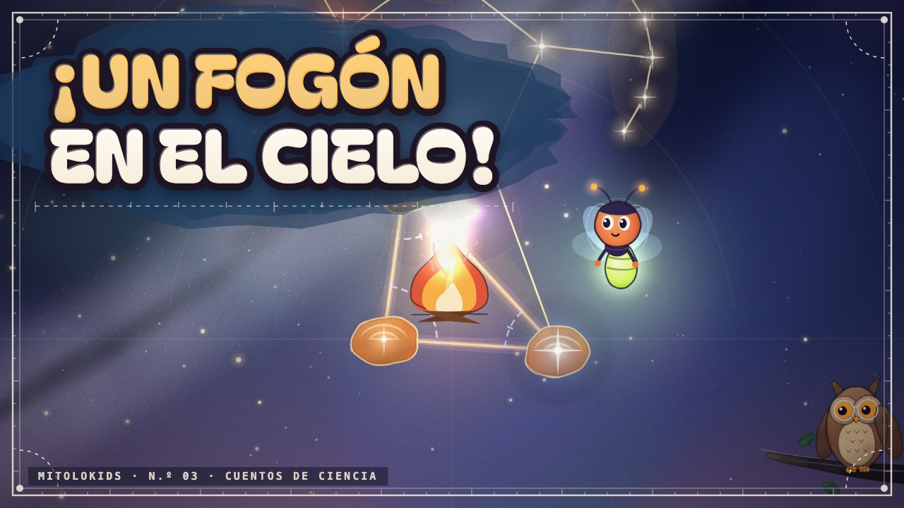
Ciencia · 03
Chispa y los dibujos del cielo
Chispa es una luciérnaga muy curiosa: ¿las estrellas serán luciérnagas que están muy lejos? El abuelo Tecolote le enseña que las estrellas son soles lejanos, y juntos bordan en el cielo las constelaciones más famosas.
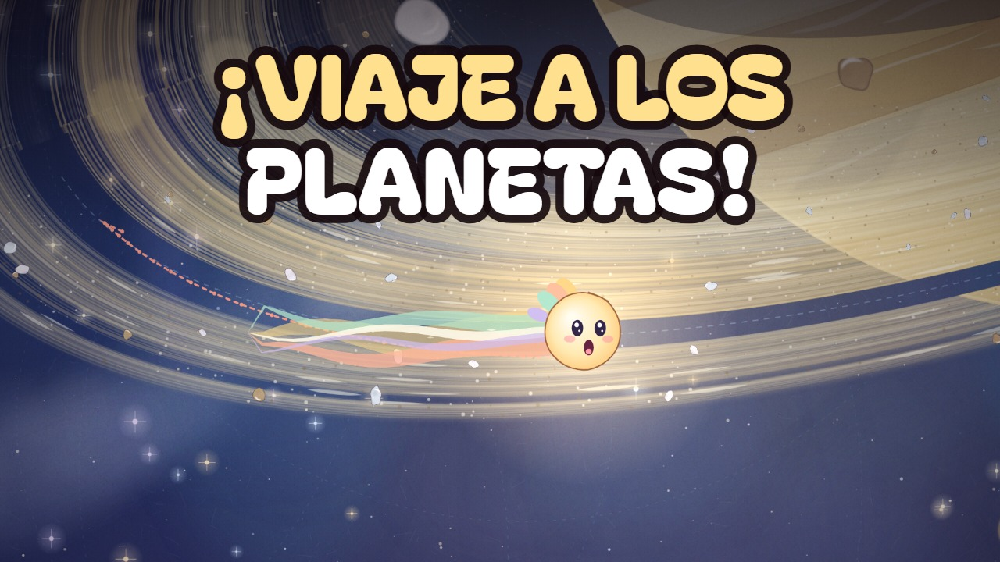
Ciencia · 04
Estela y los planetas
Estela es una cometita muy curiosa. Con el permiso del Abuelo Sol, sale a conocer a los ocho planetas, del más cerquita al más lejano… ¡y hasta pasa volando entre los anillos de Saturno!
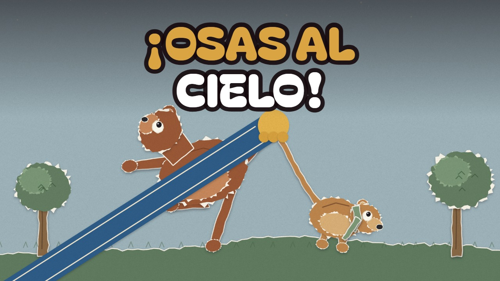
Mitos · 05
Calisto y la Osa Mayor
¿Por qué hay dos osas en el cielo? Calisto corría por el bosque más rápido que el viento y cantaba con su hijito Arcas mirando las estrellas. Pero una diosa gruñona se puso celosa y… ¡PUF! Calisto se convirtió en osa. Por fuera cambió… pero por dentro seguía siendo mamá. Hasta que Zeus tomó a los dos osos por la cola y… ¡FIUUU! ¡Arriba, al cielo!
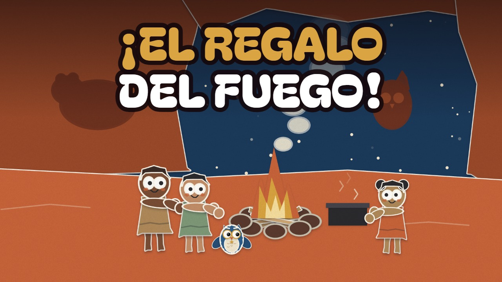
Mitos · 06
Prometeo y el regalo del fuego
Hace mucho tiempo, las personas no tenían fuego y de noche hacía mucho frío. ¡Brrr! Allá arriba, en el Monte Olimpo, los dioses sí tenían fuego… y Prometeo, un titán muy bueno, subió de puntitas, de puntitas, para traerles una chispa.
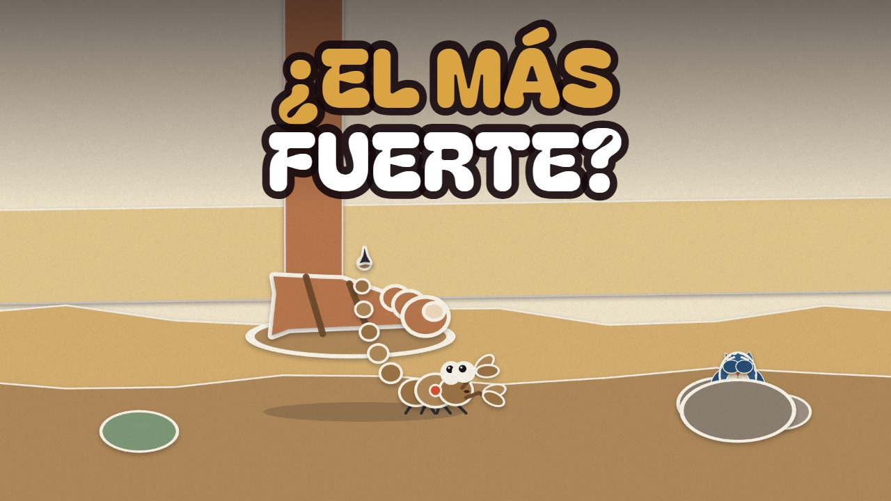
Mitos · 07
Orión y el Escorpión
Orión era un cazador enorme que presumía: «¡Soy el más fuerte del mundo!». Pero en la arena vivía alguien muy chiquitito… ¡y le dio un piquetito en el dedo gordo! Mito, la lechucita preguntona, te cuenta este mito griego en 2 minutos de papel animado.
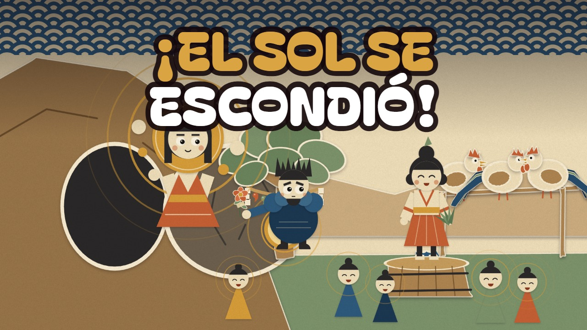
Mitos · 08
Amaterasu y la cueva
¿Qué pasaría si un día el Sol se escondiera? Amaterasu, la diosa del Sol de Japón, se enoja con su hermano Susanoo, la tormenta, y se esconde en una cueva. ¡El mundo se queda oscuro y frío! Los gallos cantan, la diosa Uzume baila sobre una tina volteada, todos se ríen… y un espejo redondo ayuda a que la luz vuelva.
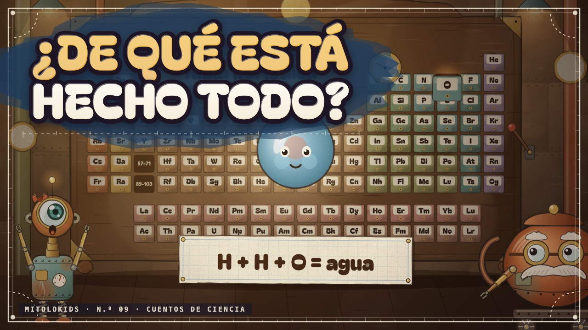
Mitos · 09
Tuerquita y la máquina de los elementos
¿De qué están hechas todas las cosas? Tuerquita, una robotita hecha de tornillos viejos, sube a la torre oxidada de Don Pistón, el inventor. Ahí descubre una máquina gigante con 118 cajoncitos: ¡la tabla periódica! De cada cajón sale un elemento que brilla… y dos hidrógenos con un oxígeno se toman de la mano para hacer una gota de agua.
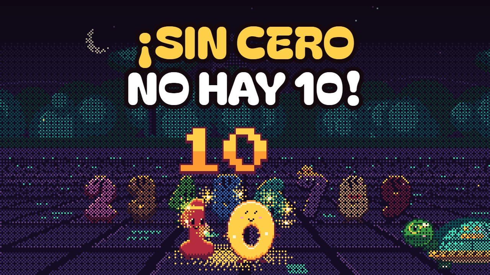
Mitos · 10
Cero y los números
Cero es un numerito redondo y tímido que cree que no vale nada. Con Áak, la tortuga maya, cuenta con sus amigos del 1 al 9… hasta que llegan diez luciérnagas y descubre que sin él ¡no existe el diez!
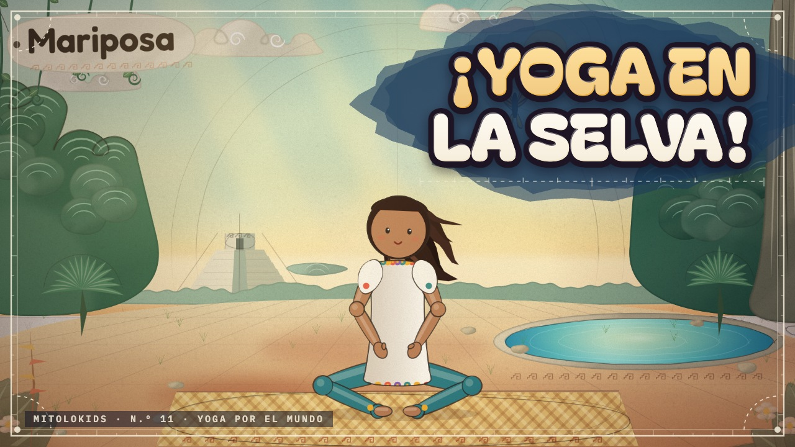
Ciencia · 11
Yoga en la selva
¡Haz yoga con Nicté y sus amigos de la selva de Yucatán! Una sesión tranquila de 5 minutos para niños de 4 a 7 años: respiramos, nos estiramos y hacemos posturas de animales. Con cada postura, la selva dibujada a lápiz se llena de color.
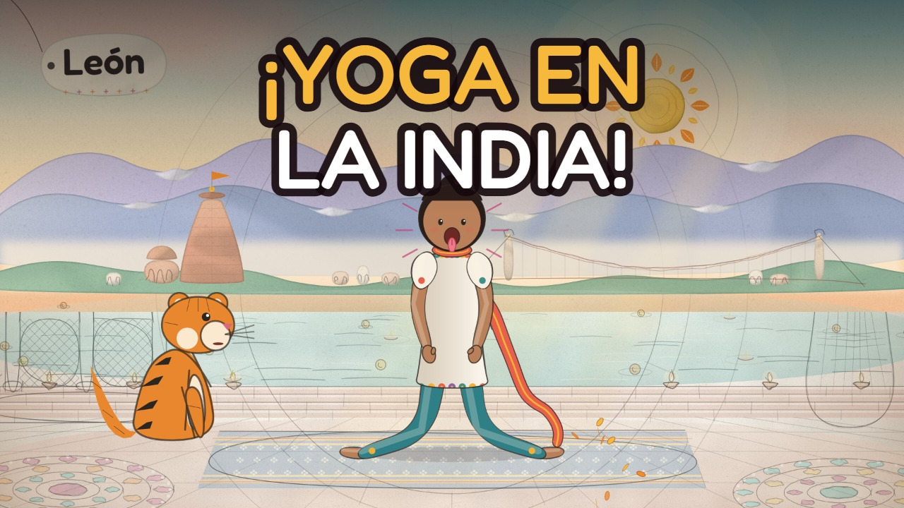
Ciencia · 12
Yoga en la India
¡Yoga por el mundo, episodio 2! Nicté abre su pasaporte de viaje y llega a la India, a la orilla del río Ganges en Rishikesh. Una sesión tranquila de 5 minutos para niños de 4 a 7 años con el tigre, el elefante, el pavo real y más amigos. Con cada postura, el paisaje dibujado a lápiz se llena de color.